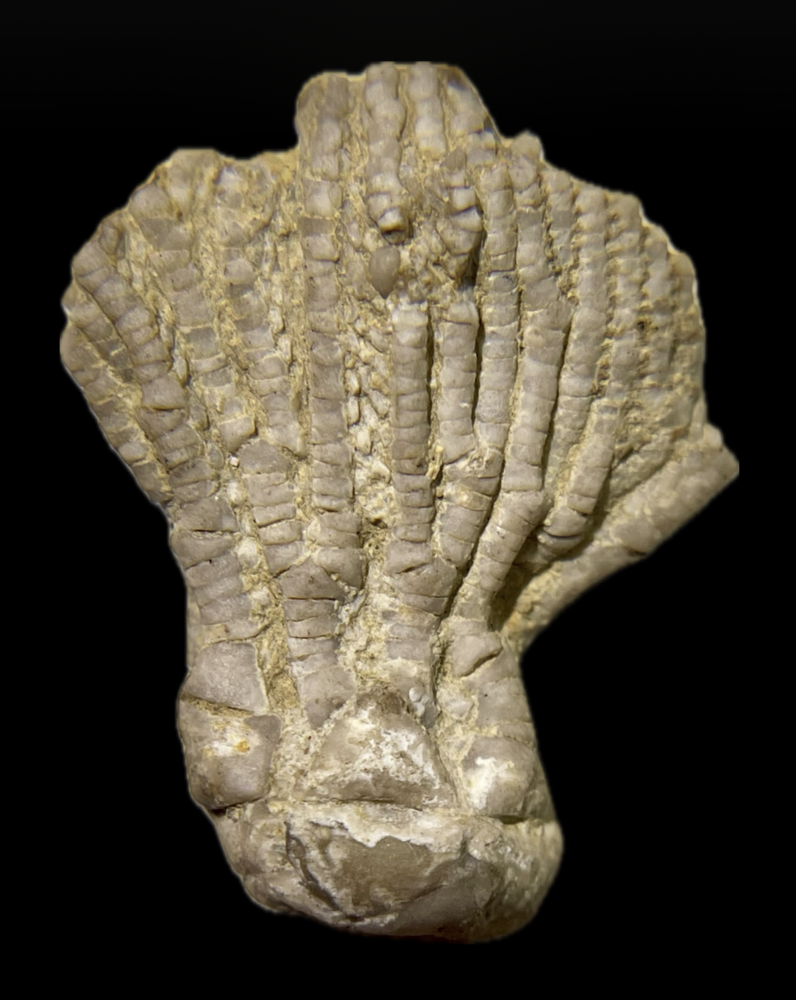
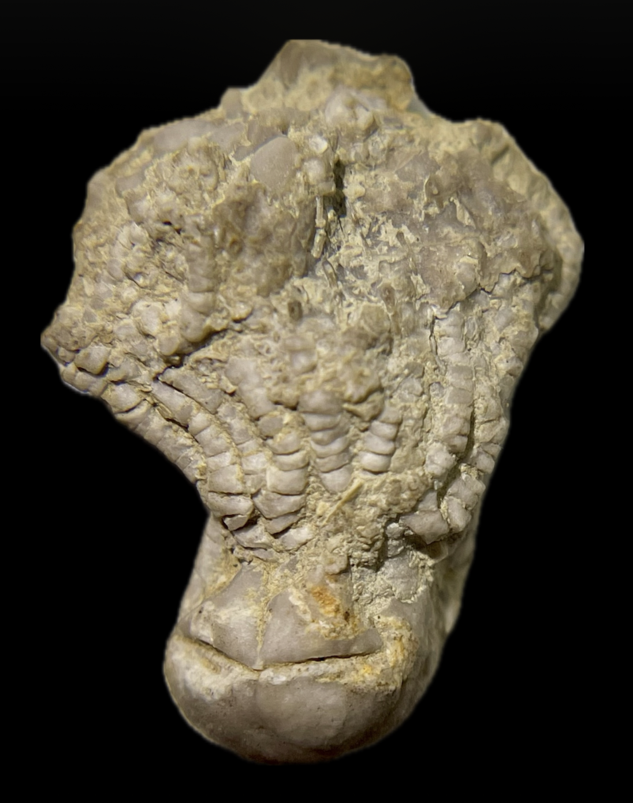
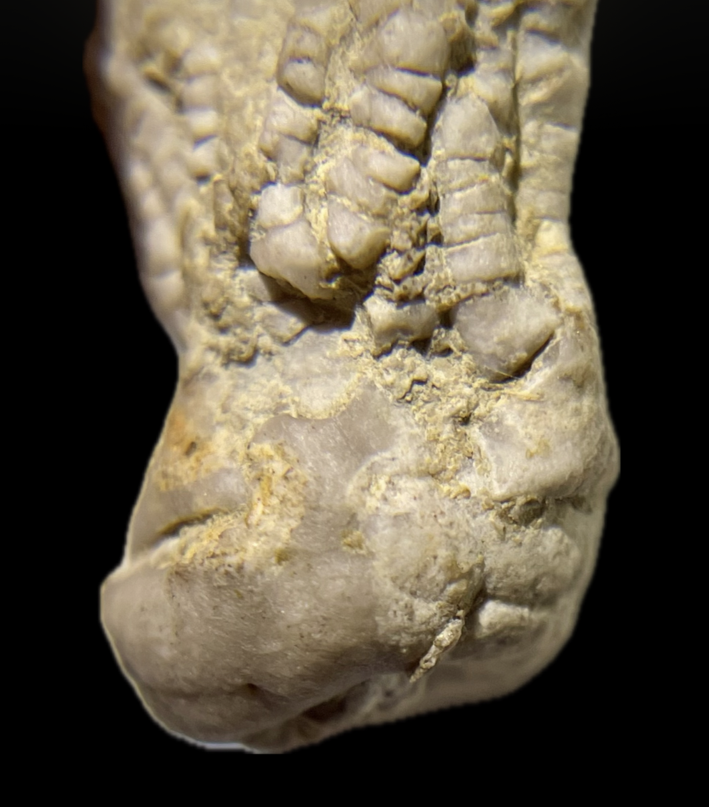

cf. Tholocrinus
Mississippian
Girkin Formation
Russellvillle, Logan County, Kentucky
Size: 2.5 cm crown
Typical of Tholocrinus in having endotomous branching, axillary first primibrachials except for the anterior (A) ray with several primibrachials, and an anal sac platform above the arms with multiple central plates. Atypical of Tholocrinus in having a much taller and wider bowl-shaped cup, and uniserial arms that lack spines.
|

|